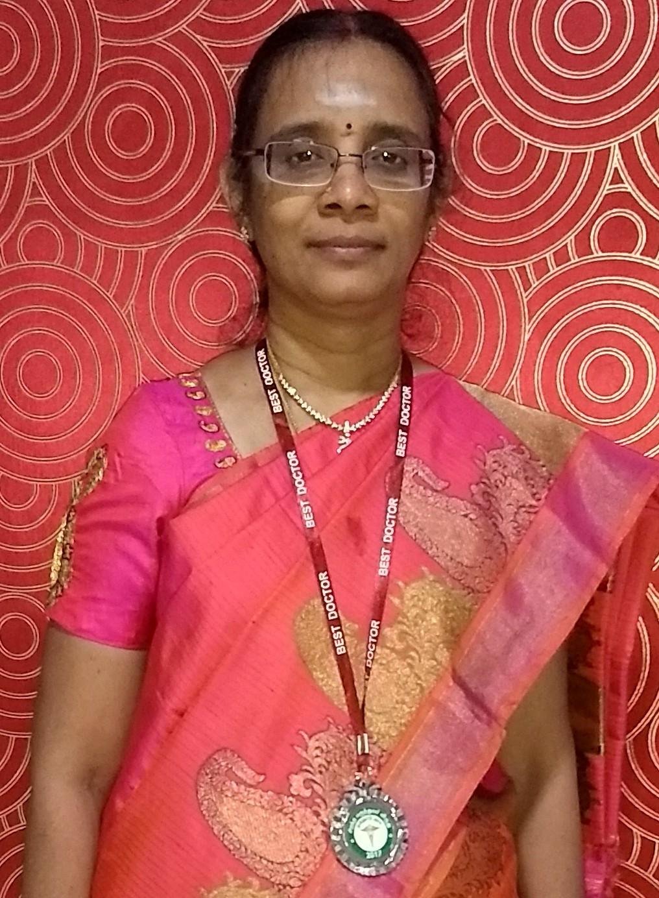

Dr. J Devimeenal
Worked as Assistant professor in KAPV Medical college, Trichy and Barnard Institute of Radiology, Madras Medical college. Currently professor and Head department of Radiodiagnosis, Govt.Kilpauk Medical College, Chennai. Previously worked as senior consultant in various diagnostic centers across the state.
Presently senior consultant at DEVI SCAN.
Achievements:
- Developed state of the art Radiology Department in Kilpauk Medical College Hospital
- Got 3 MD Radiodiagnosis seats in Kilpauk Medical College Hospital, later upgraded to 4 per year
- Founder of KARE – KMC Academy of Radiology Education
- Organised many conferences, live USG and MRI work shops, been chairman of many scientific committees
- Authored 15 publications
- Much sought-after faculty for FRCR and MD Radiology teaching courses
- Invited speaker and Faculty in many conferences. Given more than 100 oral presentations
- Chairman Paramedical board, Dr.MGR Medical University and Member of standing academic board, Dr.MGR Medical University and Board member of MD clinical course &M.Sc. Allied Health Sciences in Chettinadu Medical College
- Appraiser for Diplomat of National Board (DNB - Radiodiagnosis), MGR university paramedical courses and MD Radiology course
- Member in the expert committee of curriculam/syllabus development of MGR university MD Radiodiagnosis, DM Intervention Radiology, Fellowship in Gasrointestinal Radiology, and DM paediatric Radiology
- Dissertation Valuer&Examiner for MD radiology,PhD, BscRadiography,DRDT
- Question paper setter for various Universities, MD RD, specialty and super specialtyDM & MCH Entrance MCQs
Awards and Medals
- Received distinguished alumni award of PSG institutions in January 2019.
- Awarded with prestigious nationally regarded DR.MIHIR MITTER MEMORIAL ORATION of Indian college of radiology and Imaging 2019 at PGI Chandigarh.
- Honored with fellowship of Indian College of Radiology and Imaging (FICR) during the 71 st IRIA annual conference in January 2018 at Mumbai.
- Received Maruthuva Mamethai Award from Chekkalai Kottai Nagarathar Association on 06/08/2017.
- Received best performance award of appreciation - 2017 from the Tamilnadu Government, Department of the Health and Family Welfare presented by Dr. C. VIJAYBHASKAR., Honorable Minister, Health & Family Welfare and DR. RADHAKRISHNAN., Principle Secretary to Government Health and Family Welfare department on 28/06/2017.
- Delivered Dr.A Srinivasan memorial endowment lecture in Madras Veterinary College in March 2017
- Prof. T.S.Swaminathan young achiever award – Citation award given by Tamilnadu State Chapter IRIA 2015.
- Prestigious IDA SCUTTER ORATION in state IRIA 2016.
- Received Certificate of Excellence& Award on 2016 Republic day celebrations for meritorious service among Professor’s of Kilpauk Medical college and also for the work done in flood relief from Dean KMC.
- Received Certificate of Merit & Independence day Award on Aug 15 th , 2015 for Meritorious service among Professor’s of Kilpauk Medical college in the year 2015 from Dean KMC.
- Received Certificate of Merit for meritorious service during speciality Medical camps held during the year 2014-2015 from Dean KMC.
- Certificate of Merit & Award on 2013 independence day celebration for meritorious service among Professor’s of Kilpauk Medical college in the year 2013 from Dean KMC.
- Certificate of Appreciation for contribution to the upliftment of Kilpauk Medical college during the period from December 2012 May- 2014 from Dean KMC.
- Prof.Arcot Gajaraj, Best Paper Award- State IRIA 2005
- Best Paper Award in IRIA, Chennai monthly meets (2005)